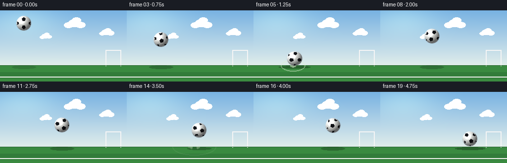
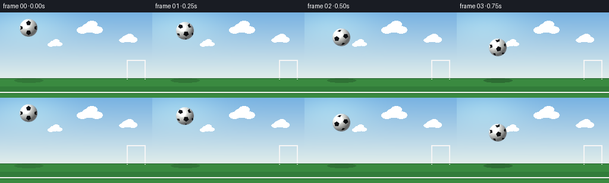

CODING AGENTS AS PIXEL WORLD MODELS
traex/Seed-2.1-Pro-0915 · phygen_029
点击播放 · 原生 RGB 像素
逐轮保存的候选
回放视频、检查图与代码变化。
每份候选均可单独播放。实际图片检查记录在下方工具轨迹中。
候选 01播放与检查图
点击播放 · 原生 RGB 像素


展开代码变化
--- 上一保存版本
+++ 本次保存版本
@@ -0,0 +1,259 @@
+"""Text-to-video: an elastic football thrown forcefully at the ground.
+
+Renders 20 RGB frames (256x144 @ 4fps) with pure numpy/PIL: parabolic bounce
+physics with elastic squash-and-stretch, a spinning shaded soccer ball,
+pitch background, contact shadow and impact dust.
+"""
+import math
+from pathlib import Path
+
+import numpy as np
+from PIL import Image, ImageDraw
+
+import artifact_io
+
+W, H, N, FPS = 256, 144, 20, 4.0
+GROUND_Y = 112 # top surface of the pitch, image coordinates
+R = 15.0 # ball rest radius
+GRAVITY = 90.0
+RESTITUTION = 0.8
+SS = 2 # supersampling factor for the ball layer
+
+
+# ---------------------------------------------------------------- geometry
+def icosahedron_vertices():
+ """12 vertices of an icosahedron = pentagon centers of a soccer ball."""
+ t = (1.0 + math.sqrt(5.0)) / 2.0
+ verts = [
+ (-1, t, 0), (1, t, 0), (-1, -t, 0), (1, -t, 0),
+ (0, -1, t), (0, 1, t), (0, -1, -t), (0, 1, -t),
+ (t, 0, -1), (t, 0, 1), (-t, 0, -1), (-t, 0, 1),
+ ]
+ out = []
+ for v in verts:
+ n = math.sqrt(sum(c * c for c in v))
+ out.append(np.array([c / n for c in v], dtype=np.float64))
+ return out
+
+
+PENT_CENTERS = icosahedron_vertices()
+SPIN_AXIS = np.array([0.35, 0.9, 0.25])
+SPIN_AXIS = SPIN_AXIS / np.linalg.norm(SPIN_AXIS)
+SPIN_SPEED = 7.0
+
+
+def rotate_axis(v, axis, angle):
+ c, s = math.cos(angle), math.sin(angle)
+ return v * c + np.cross(axis, v) * s + axis * np.dot(axis, v) * (1 - c)
+
+
+# ---------------------------------------------------------------- physics
+def simulate():
+ dt = 1.0 / 480.0
+ x, y = 48.0, 26.0
+ vx, vy = 28.0, 10.0
+ impacts = [] # (time, impact speed)
+ states = []
+ t = 0.0
+ target_times = [i / FPS for i in range(N)]
+ ti = 0
+ while ti < N:
+ while t < target_times[ti]:
+ vy += GRAVITY * dt
+ x += vx * dt
+ y += vy * dt
+ if y + R >= GROUND_Y and vy > 0:
+ y = GROUND_Y - R
+ vy = -RESTITUTION * vy
+ impacts.append((t + dt, abs(vy)))
+ t += dt
+ states.append((x, y, vx, vy))
+ ti += 1
+ return states, impacts
+
+
+def deformation(t, impact_event):
+ """Vertical scale sy (area-preserving sx = 1/sy) from damped wobble."""
+ t_imp, speed = impact_event
+ dt_imp = t - t_imp
+ if dt_imp < -0.05 or dt_imp > 1.4:
+ return 1.0, 1.0
+ amp = 0.42 * min(1.0, speed / 100.0)
+ w = -amp * math.cos(14.0 * dt_imp) * math.exp(-6.0 * max(dt_imp, 0.0))
+ sy = max(0.52, 1.0 + w)
+ sx = 1.0 / sy
+ return sx, sy
+
+
+# ---------------------------------------------------------------- background
+def make_background():
+ img = np.zeros((H, W, 3), dtype=np.float64)
+ top = np.array([120, 178, 226.0])
+ horizon = np.array([226, 238, 235.0])
+ for row in range(GROUND_Y):
+ f = row / GROUND_Y
+ img[row, :] = top * (1 - f) + horizon * f
+ yy, xx = np.mgrid[0:GROUND_Y, 0:W]
+ glow = np.exp(-(((xx - 46) / 70.0) ** 2 + ((yy - 18) / 34.0) ** 2))
+ img[:GROUND_Y] += glow[..., None] * np.array([26, 24, 10])
+ green_a = np.array([58, 138, 64.0])
+ green_b = np.array([50, 124, 58.0])
+ band = 13
+ for row in range(GROUND_Y, H):
+ img[row, :] = green_a if ((row - GROUND_Y) // band) % 2 == 0 else green_b
+ frame = Image.fromarray(np.clip(img, 0, 255).astype(np.uint8)).convert("RGBA")
+ d = ImageDraw.Draw(frame)
+ for cx, cy, s in [(150, 26, 1.0), (215, 44, 0.7), (92, 52, 0.55)]:
+ for ox, oy, rr in [(0, 0, 13), (12, 3, 10), (-12, 4, 9), (4, -6, 9)]:
+ box = [(cx + (ox - rr) * s), (cy + (oy - rr * 0.6) * s),
+ (cx + (ox + rr) * s), (cy + (oy + rr * 0.6) * s)]
+ d.ellipse(box, fill=(255, 255, 255, 150))
+ gx, gh = 214, 32
+ d.line([(gx, GROUND_Y), (gx, GROUND_Y - gh)], fill=(245, 245, 245, 220), width=2)
+ d.line([(gx + 30, GROUND_Y), (gx + 30, GROUND_Y - gh)], fill=(245, 245, 245, 220), width=2)
+ d.line([(gx, GROUND_Y - gh), (gx + 30, GROUND_Y - gh)], fill=(245, 245, 245, 220), width=2)
+ d.line([(0, GROUND_Y + 22), (W, GROUND_Y + 22)], fill=(238, 240, 235, 200), width=2)
+ d.line([(0, GROUND_Y - 1), (W, GROUND_Y - 1)], fill=(40, 100, 48, 255))
+ return np.asarray(frame.convert("RGB"), dtype=np.float64)
+
+
+BACKGROUND = make_background()
+
+
+# ---------------------------------------------------------------- ball render
+def render_ball(cx, cy, sx, sy, spin):
+ rx, ry = R * sx, R * sy
+ pad = 4
+ layer_w = int(math.ceil(2 * rx)) + pad * 2
+ layer_h = int(math.ceil(2 * ry)) + pad * 2
+ layer = Image.new("RGBA", (layer_w * SS, layer_h * SS), (0, 0, 0, 0))
+ d = ImageDraw.Draw(layer)
+ ox, oy = layer_w / 2.0, layer_h / 2.0
+
+ def to_layer(u, v):
+ return ((ox + u * rx) * SS, (oy + v * ry) * SS)
+
+ bx, by = to_layer(-1, -1)
+ ex, ey = to_layer(1, 1)
+ d.ellipse([bx, by, ex, ey], fill=(238, 240, 236, 255))
+
+ for center in PENT_CENTERS:
+ vc = rotate_axis(center, SPIN_AXIS, spin)
+ if vc[2] <= 0.08:
+ continue
+ u, v, z = vc
+ size = 0.30 * (0.45 + 0.55 * z)
+ orient = spin * 0.9 + math.atan2(v, u)
+ pts = []
+ for k in range(5):
+ a = orient + 2 * math.pi * k / 5
+ pu = u + size * math.cos(a)
+ pv = v + size * math.sin(a)
+ if pu * pu + pv * pv > 0.98:
+ pu, pv = u, v
+ pts.append(to_layer(pu, pv))
+ d.polygon(pts, fill=(18, 20, 24, 255))
+
+ arr = np.asarray(layer, dtype=np.float64)
+ lsx = layer_w * SS
+ lsy = layer_h * SS
+ px = (np.arange(lsx) + 0.5) / SS - ox
+ py = (np.arange(lsy) + 0.5) / SS - oy
+ gx_, gy_ = np.meshgrid(px, py)
+ nx, ny = gx_ / rx, gy_ / ry
+ inside = nx * nx + ny * ny <= 1.0
+ nz = np.sqrt(np.clip(1.0 - nx * nx - ny * ny, 0, 1))
+ light = np.array([-0.45, -0.55, 0.70])
+ light = light / np.linalg.norm(light)
+ diff = np.clip(nx * light[0] + ny * light[1] + nz * light[2], 0, 1)
+ intensity = 0.42 + 0.66 * diff
+ view = np.array([0, 0, 1.0])
+ half = light + view
+ half = half / np.linalg.norm(half)
+ spec = np.clip(nx * half[0] + ny * half[1] + nz * half[2], 0, 1) ** 26 * 0.75
+ rgb = arr[..., :3]
+ rgb *= intensity[..., None]
+ white_mask = (rgb.sum(axis=2) > 200)[..., None]
+ rgb += spec[..., None] * white_mask * 255
+ rim = np.clip(1.0 - nz, 0, 1) ** 3 * 40.0
+ rgb += rim[..., None] * np.array([0.5, 0.7, 1.0])
+ arr[..., :3] = np.clip(rgb, 0, 255)
+ arr[~inside] = 0
+ out = Image.fromarray(arr.astype(np.uint8), "RGBA").resize(
+ (layer_w, layer_h), Image.Resampling.LANCZOS)
+ return out, (int(round(cx - ox)), int(round(cy - oy)))
+
+
+# ---------------------------------------------------------------- effects
+def draw_shadow(img, x, sx, height_above):
+ alpha = 0.38 * np.clip(1.0 - height_above / 130.0, 0.25, 1.0)
+ w = R * (1.6 if height_above > 6 else 2.0 * sx)
+ h = max(3.0, R * 0.42 * (0.5 + 0.5 * min(1.0, height_above / 40 + 0.4)))
+ layer = Image.new("RGBA", (W, H), (0, 0, 0, 0))
+ d = ImageDraw.Draw(layer)
+ d.ellipse([x - w, GROUND_Y - h / 2 + 3, x + w, GROUND_Y + h / 2 + 3],
+ fill=(10, 30, 14, int(255 * alpha)))
+ img.alpha_composite(layer)
+
+
+def draw_impact_fx(img, t, impact_xs, rng):
+ layer = Image.new("RGBA", (W, H), (0, 0, 0, 0))
+ d = ImageDraw.Draw(layer)
+ for t_imp, ix, speed in impact_xs:
+ dt = t - t_imp
+ if dt < 0 or dt > 0.55:
+ continue
+ strength = min(1.0, speed / 100.0)
+ life = 1.0 - dt / 0.4
+ if life > 0:
+ rad = R * (1.1 + 2.2 * dt / 0.4)
+ a = int(170 * life * strength)
+ d.ellipse([ix - rad, GROUND_Y - 5 - rad * 0.25,
+ ix + rad, GROUND_Y + 5 + rad * 0.25],
+ outline=(220, 235, 210, a), width=2)
+ for j in range(9):
+ age = dt - j * 0.015
+ if age <= 0 or age > 0.5:
+ continue
+ sign = 1 if j % 2 else -1
+ spd = (26 + 26 * rng.random()) * strength
+ px = ix + sign * spd * age
+ py = GROUND_Y + 2 - abs(spd) * 0.45 * age + 26 * age * age
+ pa = int(160 * (1 - age / 0.5))
+ pr = 1.6
+ d.ellipse([px - pr, py - pr, px + pr, py + pr],
+ fill=(214, 226, 198, pa))
+ img.alpha_composite(layer)
+
+
+def main():
+ states, impacts = simulate()
+ impact_xs = [(t_imp, 48.0 + 28.0 * t_imp, speed) for t_imp, speed in impacts]
+ rng = np.random.default_rng(7)
+ frames = []
+
+ for i in range(N):
+ t = i / FPS
+ x, y, vx, vy = states[i]
+ latest = max((imp for imp in impacts if imp[0] <= t + 1e-6),
+ default=impacts[0], key=lambda z: z[0])
+ sx, sy = deformation(t, latest)
+ cy = y
+ if abs((y + R) - GROUND_Y) < R and sy < 1.0:
+ cy = GROUND_Y - R * sy
+ spin = SPIN_SPEED * t
+ base = Image.fromarray(BACKGROUND.astype(np.uint8)).convert("RGBA")
+ height_above = max(0.0, GROUND_Y - (cy + R * sy))
+ draw_shadow(base, x, sx, height_above)
+ draw_impact_fx(base, t, impact_xs, rng)
+ ball, pos = render_ball(x, cy, sx, sy, spin)
+ base.alpha_composite(ball, pos)
+ frames.append(np.asarray(base.convert("RGB"), dtype=np.uint8))
+
+ case_dir = Path(__file__).resolve().parent
+ artifact_io.save(np.stack(frames), case_dir)
+ print(f"saved {N} frames to {case_dir}")
+
+
+if __name__ == "__main__":
+ main()
可观测工具轨迹
实际执行的命令与返回图片。
命令 1exit 0
/bin/bash -lc 'cat prompt.txt; echo "====="; cat GENERATION_RULES.md; echo "====="; cat task_spec.json'
命令 2exit 0
/bin/bash -lc 'ls -la; python -c "import artifact_io; print(artifact_io.__file__)"; python -c "import numpy, PIL; print(numpy.__version__, PIL.__version__)"'
命令 3exit 0
/bin/bash -lc 'cat artifact_io.py'
命令 4exit 0
/bin/bash -lc 'cd . && python generate.py && ls frames | head -25'
保存候选 1 份；完成命令 4 次；可验证图片返回 0 张。原始 API 响应与完整日志保留在本地。